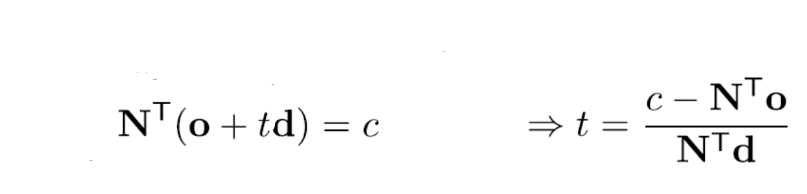
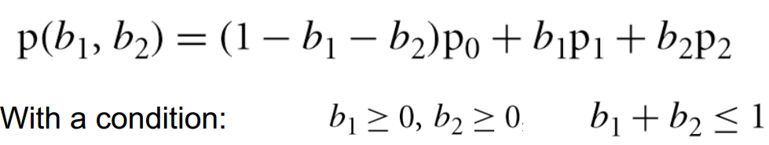

Assignment 3 - Realistic rendering with ray tracing
Introduction
In the last assignment, you have been familiar with the mesh construction and you are able to construct meshes with Bezier surfaces. In this assignment, you are going to render meshes more realistically within the framework of ray tracing. The simplest lighting that you have used from OpenGL API can only handle point light sources with direct illumination. To have realistic rendering, we need to consider more general lighting distributions, where area light sources with indirection illumination from many reflected surfaces should be taken into account. Ray tracing starts by shooting rays from the camera imaging plane, and back-trace these rays to accumulate all possible light energy to form the pixel intensity and color. Since ray tracing tries to back-trace all light rays in space, the final formed image is much more realistic than the one rendered by OpenGL, and you are required to build such a rendering program with the help from our skeleton code.
Things to be done
- [must] Load a mesh object from the OBJ
file, and render the mesh with area light source in an enclosed environment box.
The material surface property is diffuse + mirror
combined.
- [must] Acceleration structures for efficient ray-geometry intersection
should be created, where you can choose to use grid acceleration structure for simplicity.
- [must] Indirect lighting should be considered, where you basically rely
on path tracing for rendering them.
- [must] Anti-aliasing with super-sampling and filtering should be
performed.
- [optional] You can add transparent or semi-transparent objects into the
scene, where the light rays will transmit through the object.
- [optional] You can implement more complicated acceleration structures
such as KD-tree or hybrid structure, or you can organize larger scenes, where in
scene level, you construct BVH structure, and in object level, you construct
BSP structure or grid-BSP hybrid structure.
- [optional] You can also implement
bi-directional path tracing to better account for some phenomena such as
caustics, and instead of using simple area light source, you can
also use environment light map.
Submission & demonstration
Code submission deadline:
2018-5-6,
23:59pm
Demonstration date & time:
2018-5-7,
7pm-9pm
Please send your code package and technical report to TAs though email (check
who you should send your assignment to on Piazza)
Grading rules
- The [must] items are things
that you must finish. When you have finished all the [must] items and
demonstrate them successfully in front of TAs, you will get all the scores for
the programming part. [90%]
- In addition to programming, you will also need to submit a technical report
specifying the details of your implementation: what you have done and how you
achieve them. [10%]
- You can also choose to do optional items, and if you choose to do any of them, you will
get additional scores based on the additional work you have done. But the
maximum additional score will not exceed 20% of the entire score of this
assignment.
- Late submission of your assignment will subject to score deduction. Please refer to
Late hand-in policy
for details.
Note:
Before doing the assignment, please read the materials on
ray tracing. You can take a reference from the book "Physically-based
rendering"
Before you start doing your assignment, you first need to know more in detail about how ray tracing algorithm is designed and how to implement it. In the following, we will introduce the related concepts and algorithms in order to help you finish this assignment.
Camera model and ray generation
To generate an image of a scene, we need first understand how images are created. Ray tracing is a physically based approach, where you consider that each pixel is formed by an incoming light ray with a certain energy. Since light rays are reversible in space, we can back-trace these rays starting from the imaging plane and through each pixel, see Figure 1. These back traced rays will hit or not hit any objects in space. If the ray hits an object, it will be reflected and refracted about the surface normal of the hit (intersection) point. Light energy will be accumulated along all the light ray paths.
Figure 1
Figure 2
Here is pseudocode of a camera class.
class Camera
{
private:
int _imageW;
int _imageH;
double _nearPlaneDistance = 0.1;
double _aspectRatio = 0;
double _fov;
Vector3d _position;
Vector3d _cameraFwd;
Vector3d _cameraRight;
Vector3d _cameraUp;
Vector3d _up;
public:
Camera(Vector3d position, Vector3d target, Vector3d up,
int width, int height,
double nearPalneDistance, double fov);
inline Vector3d center() const { return _position; }
inline Vector3d direction() const { return _cameraFwd; }
inline Vector3d up() const { return _up; }
inline int imageW() const { return _imageW; }
inline int imageH() const { return _imageH; }
Ray get_ray(int x, int y, bool jitter, unsigned short *Xi);
};
Once you have defined the camera, you can calculate the position of each
pixel center in world coordinate space and generate a ray for each pixel to
shoot it out. Note that when super-sampling is involved for anti-aliasing, you
should shoot multiple rays, where you sample within each pixel (the pixel is a
square region in space and has a finite size to generate multiple rays.
Ray-geometry intersection
Once the rays are generated, each ray works independently by intersecting with the geometry in space. If any geometry is intersected by a ray, some energy will be accumulated to the ray. Ray-geometry intersection is a very important step in ray tracing, where it influences much of the performance. Once we determine the intersection point of a ray with a geometry, we can get the surface normal, texture coordinate etc. at that point for further rendering.
Ray-sphere intersection: For example, if we want to determine a ray-sphere intersection, we will work with the sphere equation (with center(0,0,0); for arbitrary sphere center, the intersection can be done similarly):
and insert the ray equation in parametric form to obtain:
We solve the equation and get the result for t:
There are generally two solutions when a ray intersects with a sphere unless it is tangential to the sphere. In ray tracing, we generally select the intersection point which is the nearest to the camera, which means that for two solutions of parameter t, we choose the smallest one to compute the intersection point. The normal of the sphere is the vector starting from the center of the sphere to the intersection point.
Ray-plane intersection: For ray-plane intersection, we have similar solution and the equation looks like (check the course notes):

Ray-AABB intersection: To determine the intersection of any object, we can first determine a ray-bounding box intersection. Bounding box is the box with the minimal volume that encapsulates the object in space. Axis-aligned bounding box (AABB) further constrains the bounding box so that the faces of the box are always parallel to the coordinate planes, no matter how the geometrical objects orient, see Figure 3.
Figure 3
To intersect a ray with AABB, we determine intersection with planes that are parallel to the coordinate planes, and check intersection point range. First, we insert ray equation into the AABB planes, and solve it for t. Then we check intersected points for whether they are within the AABB range on the corresponding planes.Ray-triangle intersection: Our objects or surfaces usually consist of a set of triangles, so basically we should figure out how to determine the intersection between triangles and rays. Any point (p) inside the triangle (with p0, p1, p2) can be written as:

Insert the parametric ray equation and we get the equation to solve:.
The efficient solution is taken as the following:.
Once we obtain the barycentric coordinate, we can caclulate the normal (as well as the texture coordinate) at the intersected point by barycentric coordinate interpolation:
Ray-polygon intersection: For polygons, you can divide them into triangles and get intersection through ray-triangle intersection.
Ray-mesh intersection: For arbitrary mesh consisting of triangles, you need acceleration structures to quickly locate the intersected triangle. The basic approach is to use grid structure (see Figure 4), where for each grid cell, we need to associate the related triangle indexes. The important step here is to successfully identify whether a box contains a triangle.
Figure 4
In your homework, you need to implement intersections in different object classes by completing function getIntersection() of virtual class Object :
virtual ObjectIntersection getIntersection(const Ray& ray)
{
}
And the function returns struct ObjectIntersection, which includes the
intersection state (hit or not), normal and material of the intersection point, and
parameter t to determine the length of the ray.
struct ObjectIntersection
{
bool _hit;
double _t;
Vector3d _normal;
Material _material;
ObjectIntersection(bool hit = false,
double u = 0, Vector3d normal = Vector3d(0),
Material material = Material());
};
Computing surface normal and reflection/refraction rays
Both reflection and refraction happen at the object surface, and we need to compute both reflection and refraction rays. We can refer to the process according to Figure 4 below:
Figure 5
In the image, i refers to the incoming light ray, n refers to the surface normal, r and t refer to reflection and refraction rays. For computing reflection rays, we can apply:For refraction ray, according to Snell's law ,we have
.
Sampling light rays at the intersection point
Since we need to account for the fact that light can come from any direction around the hemi-sphere above the intersection point P, We use Monte Carlo integration to select some random directions within the hemisphere to trace rays in these directions into the scene. If these rays intersect some geometry in the scene, we then compute the light energy at the intersected point which is reflected. If the rays do not intersect with the light sources, we need to trace them until they hit the light sources.
Let's have a look what we need to compute the amount of light arriving indirectly at P. Basically, we need to compute the samples on the hemi-sphere and generate a set of new rays to shoot them out. For simplicity, we stick to the principle that samples over a hemi-sphere conform to a cosine distribution. There can be two ways to generate such samples. One way is to directly construct a sampling process over a hemi-sphere that follows cosine distribution; the other is to first sample uniformly over a 2D disk which is perpendicular to the normal, and then project the sample onto the hemi-sphere (Malley's method). Please refer to the course notes for the sampling equations.
In assignment, when you sample the point over a hemi-sphere, so you need generate
two uniform random variables r1,r2, and you will fill the code for generating
the sampled rays:
void calcLocalCoords(const Vector3d& w, Vector3d* u, Vector3d* v)
{
}
void onHemisphere(const Vector3d& normal, Vector3d* direction, double &r1, double &r2)
{
}
The traditional way to sample rays is to start from a camera ray. If the camera ray intersects with an object, then sample a set of rays (e.g., 1000 rays) and trace them until all of the them intersect with light sources. However, such a scheme is pretty slow in practice. As an approximation, you can choose another sampling scheme, as illustrated in Figure 6. Such a sampling method starts by giving sufficient camera ray samples per image pixel (e.g., 10000 rays per pixel), and trace for each ray independently, For every day, when it intersects with an object, we only sample one reflected/refracted ray, but according to the cosine distribution. This method not only can work faster, but also reduces the variance of the resulting rendering result.
Figure 6
Sampling light sources
When the light source is not a point light source, we also need to sample on the area of the surface, which are taken into account during the Monte-Carlo integration. For each light source, we uniformly sample on the area light sources. If the light source has non-uniform light energy distributions, we sample following that distribution. For each intersection point, we need to check whether it is directly illuminated by any sample of the light source through checking any other object between the intersected surface point and the light source sample (by intersection test again). If such any other object lies between the intersection point and the light source, we ignore such a light sample.
Bi-directional path tracing

Figure 7
When light rays bounce only once from the surface of an object to reach the eye, we refer it to the direct illumination. But when light rays are emitted by a light source, they can bounce off of the surface of objects multiple times before reaching the eye. This is what we call indirect illumination because light rays follow complex paths before entering the eye. See Figure 7.
Bidirectional path tracing takes on an idea that we divide all rays into light rays (which all start from the light sources) and camera rays (which all start from the camera pixels). Then we try to cast light rays over space first by sampling light rays (most probably uniform) around every light sample. These light rays are traced with several bounces and then stop. Once the light ray is bounced, BRDF is used to calculate the reflected light ray energy. For each intersection point of the light ray, we need to store the incoming light energy. After that, we shoot camera rays. Then a camera ray intersects with an object, we try to connect all the intersection point of the light rays to calculate the incoming energy. The camera rays are also traced with several bounces and stop. Finally, we accumulate all the energy from every camera ray to form the final pixel color. See Figure 8.
Figure 8
Anti-aliasing Aliasing is that high frequencies in the original signal masquerade as low frequencies after reconstruction (due to undersampling). So what we should do is super-sampling with a reconstruction filter to reduce the error. If we use the approach of sampling sufficient rays within a pixel, anti-aliasing is automatically involved.
¡¡
Skeleton program
We have prepared a skeleton code for you to do on both Windows and Linux, which you will need to augment it much further for realistic rendering with ray tracing. If you have any questions regarding configuration and algorithm understanding, you can resort to help from TAs.
Technical report
For technical report, we require you to do it with LaTex, and you can use TeXstudio to facilitate your editing. The latex template for your technical report can be downloaded here.
Copyright 2018 ShanghaiTech University